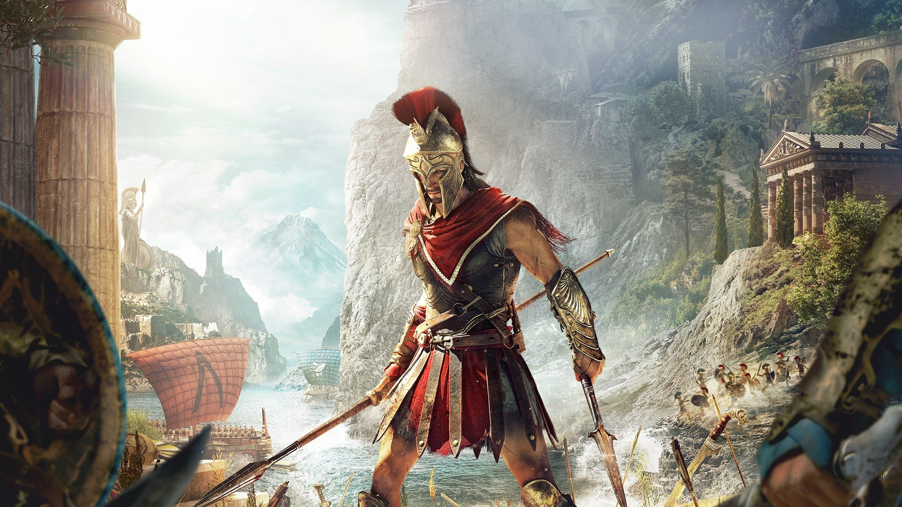
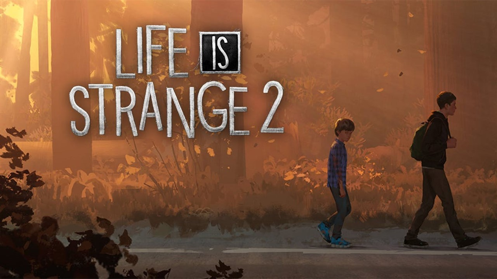
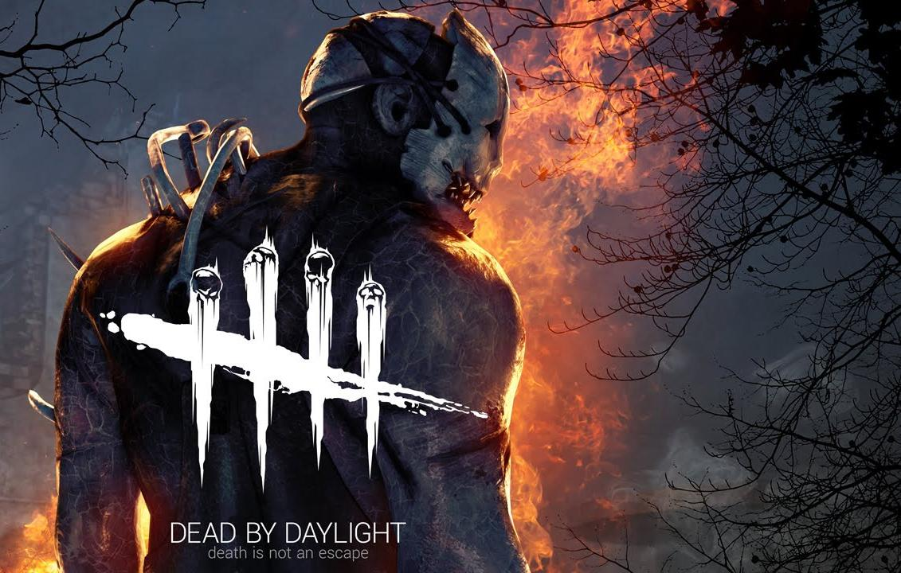
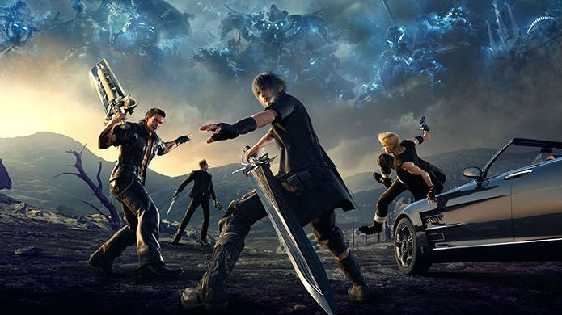

Games que Recomendo jogar
Assassin's Creed Odyssey

Nesta história de Assassinos VS Templários, veio para coroar todo o aprendizado com os deslizes do passado e agregar tudo o que a franquia acumulou de melhor: muita ação, exploração, diferentes formas de gameplay, belos visuais, customização de armas e armaduras, aliados para matar ou morrer ao seu lado, narrativa bem construída e, sim, batalhas navais. Mas também houve espaço para inovar, com uma jogabilidade menos automática - dando mais liberdade ao jogador -, combos de habilidade, opções de diálogo, a escolha do sexo do protagonista e até mesmo romance, explorando a Grécia Antiga uma das histórias e lugares mais famosos do mundo.
Life is Strange 2

Life Is Strange 2 é um jogo eletrônico episódico de aventura gráfica que possui cinco episódios. Dois irmãos, Sean e Daniel Diaz, de 16 e 9 anos, respectivamente, são obrigados a fugir de casa após um trágico incidente em Seattle. Com medo da polícia, os dois seguem em direção ao México, na tentativa de ocultar um repentino e misterioso poder sobrenatural. É um jogo de escolhas, na qual irá impactar no futuro da história do game por isso decida com cuidado os seus caminhos, pois poderá trazer um futuro adequado ou trágico. Neste jogo é retratado vários assuntos que ocorrem na socidade atualmente como preconceito, violência, depressão, religião; mas também nos aproxima da amizade, amor e esperança de talvez um dia tudo se resolva.
Dead by Daylight

Dead by Daylight é um jogo on-line de 1 VS 4 jogadores, onde um jogador assume o papel do assassino selvagem, e os outros quatro jogadores jogam como sobreviventes, tentando escapar do assassino, reparando cinco geradores e abrindo os portões de saída para evitar ser capturado, enganchados e sacrificados. Neste jogo há vários sobreviventes e assassinos e cada personagem possui 3 vantagens que podem ser usados durante a partida, podendo usar até 4 vantagens, para isso você pode subir seu nivel com outros personagens e usar suas vantagens em diferentes assassinos e sobreviventes.
Final Fantasy XV

Final Fantasy XV conta a história de Noctis, príncipe do reino de Lucis, e seus três escudeiros reais, Ignis, Gladiolus e Prompto, em uma longa viagem para que o protagonista se encontre com sua prometida, Lunafreya, amiga de infância a qual ele não encontra há muito tempo, mas com quem tem uma forte relação. Os dois devem se encontrar para selar um casamento que representaria um tratado de paz com Niflheim, império que dominou praticamente todo o mundo com base na força bruta de seu exército de Magiteks, exceto pelo reino de Lucis. Para tanto, Noctis e companhia devem viajar da capital Insomnia para a cidade de Altissia.
No jogo você pode enfrentar vários monstros e demônios e com isso receber recompesas como as armas sagradas que estão espalhadas por todo reino e escondidas mas para isso você deve enfrentar desafios e provar que voce é digno de recebê-los.